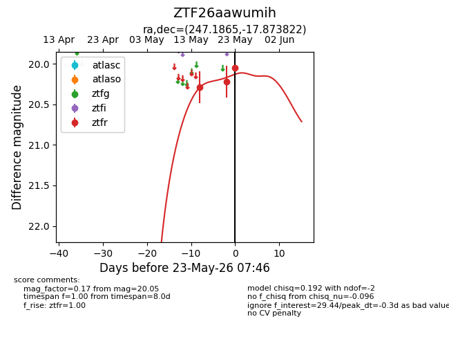
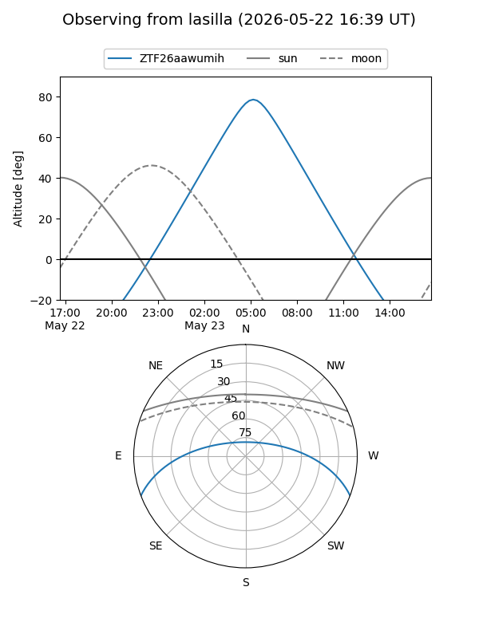
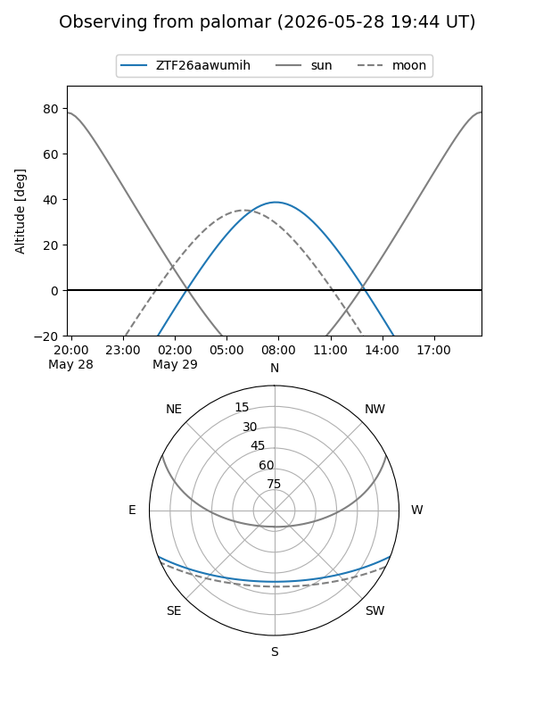
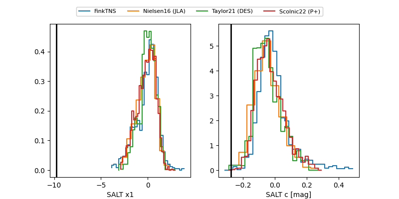

ZTF26aawumih
Target ZTF26aawumih at 2026-05-23 07:47
Aliases and brokers:
lsst-FINK: link
lsst-Lasair: link
lsst-ALeRCE: link
ztf-FINK: link
ztf-Lasair: link
ztf-ALeRCE: link
alt names
ZTF26aawumih (ztf,fink_ztf)
Coordinates:
equatorial (ra, dec) = 247.1865,-17.87382
equatorial (HMS+DMS) = 16:28:44.75,-17:52:25.76
galactic (l, b) = (358.6913,+20.73235)
Flags:
Photometry:
last ztfr=20.05
3 ztfr detections
Lightcurve

Visibility


Additional plots
